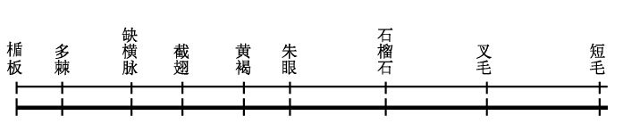
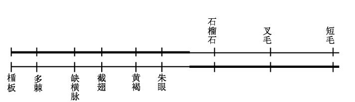
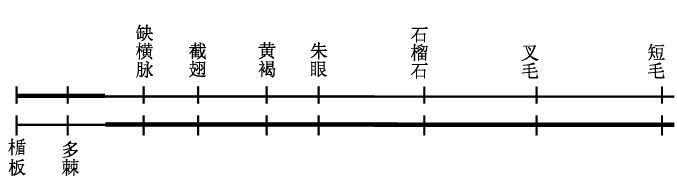
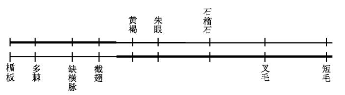

许多基因在交换中同时交换
在以上的交换例子里，只研究了两对性状，并仅仅以参加杂交的两对基因之间只有一次交换的证据为根据。如果要了解别处（即连锁群内其他部分）发生了多少处交换，就必须涉及全群范围内的其他成对性状。例如，一只雌蝇具有第一群的九种性状，即楯板、多棘、缺横脉、截翅、黄褐、朱眼、石榴石、叉毛和短毛；使之同野生型雄蝇杂交，杂种一代的雌蝇（图15）又回交同样的九种隐性型，孙代中会出现各种各样的交换。如果在两群中心附近（介于朱眼和石榴石之间）发生交换，结果会两个半截整段地交换（如图16）。

图15 示两个等位群的连锁基因。上行为九种性连锁隐性基因的大概位置。下行为正常等位基因
在其他情形下，交换也可以发生在某一端的附近（如介于多棘和缺横脉之间）。如果像图17所表示的那样，两组之间只有很短的两段彼此交换。每逢交换，都发生了同样的过程，即互相交换的，总是整组的基因，虽然一般看到的仅仅是交换点两侧的基因。

图16 示石榴石与朱眼之间的交换，即图15两群中央的附近

图17 示多棘与缺横脉之间进行的交换，即图15中靠近两群的左端
在两个不同平面上同时发生交换时（图18），参加的基因也是很多的。例如，以上两组之间，如果截翅和黄褐之间发生一起交换，石榴石和叉毛之间发生另一起交换，那么，两组的中段上的所有基因都会同时交换。两组的两端既然同以前一样，如果没有中间一段的突变基因作为标志，则以上两处发生交换的事实便会觉察不出了。

图18 图15中两基因群进行了双交换。截翅与黄褐之间有一次交换，石榴石与叉毛之间另有一次交换